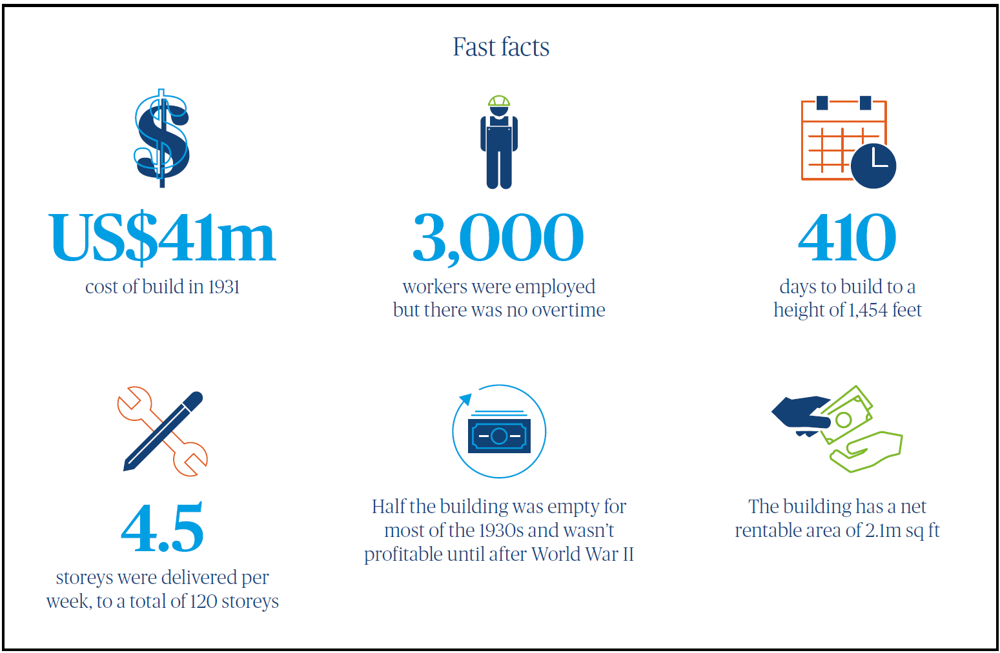

Empire State Building: A race for the sky

John Robbins
Managing Director, USA and North America Head of Real Estate
North America
Against the backdrop of the Great Depression of the late 1920s, the 103-storey Empire State Building was built in just 410 days. Today, new towers are starting to soar again en masse in New York City for the first time since the boom of the 1980s. As the need for speed to market intensifies, we look back on this globally iconic building as a feat of innovative construction and one of the original market disruptors.
The Empire State Building was built on the site of the original Waldorf Astoria Hotel. This was a symbolic gesture as the former hotel represented an elitist gilded age, while the new structure was conceived to represent the might, skill and brawn of the American worker.
The design approach and collaboration of the building’s supply chain was rooted in competitive spirit driven by the ‘race to the sky’ – a desire to construct a taller building before the competition. In the era of the first skyscraper boom of the late 20s and 30s, the client and its team were determined that the building should soar above the Chrysler Building which was also under construction. Consequently, the Empire State Building was originally designed as an 80-storey edifice but plans were altered several times to keep pace with and exceed the height of its rival.
The challenge to build tall, maintain programme and increase speed to market remains in New York and many global cities.
Technology and globalised supply chains may be very different today, but there are many parallels between the real estate construction industries of then and now. With a great need for market disruption in today’s global construction sector, what can we learn from the Empire State Building?
A unique collaborative delivery model Architectural historian, Carol Willis, cites two reasons for the incredible speed of build. The first was “a design team approach that involved the collaboration of the architects, owners, builders and engineers in planning and problem-solving and organisational genius of the contractors”. Part of that statement sounds remarkably close to what defines today’s best projects, which always have a highly collaborative and integrated supply chain and clear vision and leadership from the client team.
The modern equivalent could be seen as Integrated Project Delivery (IPD), a method that, when embraced by the project team, can increase the productivity of construction. Great projects today are characterised by teams focused on the right outcomes, where best value and performance is achieved, rather than solely lowest cost.

Just-in-time delivery
The supply chain of the Empire State Building focused on just-in-time (JIT) delivery methods, which allowed for more efficient inventory and less stock storage on site. This approach was required due to the crowded city environment around the building, but it also allowed for the structure to be constructed more efficiently.
Many of the components were prefabricated. The steel structure was produced in Pittsburgh, allowing for easy shipment on rail cars to the centre of Manhattan within only a three-day delivery timeline.
Workers utilised a railway and materials host system to push cars full of building materials around the site to transport the ten million bricks needed to back up the exterior limestone.
In the market today we need to embrace offsite fabrication to increase production of building components exponentially, while also improving quality through controlled environments. While this is adopted on certain projects, there is still room for improvement in embracing modular construction. We have, however, fully embraced the comprehensive approach to logistical planning which the Empire State Building showed can ensure major projects remain on programme.
Material selection
Many materials for the Empire State Building were sourced locally. The granite used for the façade of the building was sourced from quarries in New York State, saving significant time and cost compared to importing the stone from outside the US.
Today in New York and around the US, the Trump Administration’s trade tariffs are impacting the cost and time to import materials such as steel, aluminium, ceramics and many other building supplies coming from China and other foreign locations. Against this backdrop, understanding how material specifications and sourcing can affect cost and project timescales is critical.
Labour: the challenge of our time
What other factors increased the speed of construction? The Great Depression from 1929 to 1933 served up a cheap labour pool of 3,000 workers who worked day and night on the Empire State Building.
Apart from the poor health and safety record on the Empire State Building construction, which resulted in 14 people perishing during construction, the surplus labour is also a stark reminder of differences between then and now. While we have lived through a global crisis in 2008/9, the construction labour pool never fully recovered and our industry is impacted by an ageing workforce and a lack of new younger entrants.
The Empire State Building remains an icon in New York City but also a fitting reminder of the need for era-defining projects to help disrupt the way we build.
Technology enabled
At the time of construction, the Empire State Building used innovative techniques of the time to drive efficiency and build tall. While technology has considerably advanced in many industries, construction has been sluggish to adopt and apply innovation. Today we have sophisticated means of building information modelling (BIM) at our disposal to speed design, detect field clashes, increase efficiency, help control costs and improve ongoing facilities management. Yet on major projects in New York, the full power of technology is not consistently used. Often defaulting to replace technology with more labour. With the advent of digital manufacturing, production speeds have the potential to increase massively in construction.
Embracing new technology is also allied to the final area where clients and contractors can drive change by playing a part in attracting new industry talent. The increased adoption of technology on major projects is important to drive performance, but it’s also fundamental to attracting new entrants who want to join a progressive, high-tech industry.
In New York, significant progress is being made in these areas. An initiative is underway to work with Building Employers’ Trade Association (BETA), an organisation that represents major contractors in New York City, in attracting and recruiting new talent into the construction industry with technology as a major initiative.
Looking forwards and upwards
It is now impractical in the US to build skyscrapers in 410 days, but the construction principles used on the Empire State Building - supply chain collaboration, offsite manufacture, just-in-time and ‘last mile’ delivery models and a commitment to use the best possible technology – remain highly relevant today. The good news is, more and more of us are aligned around these issues and want to collaborate to deliver the change we need.
The Empire State Building remains an icon in New York City but also a fitting reminder of the need for era-defining projects to help disrupt the way we build.
This content is part of the 360°View, issue 10